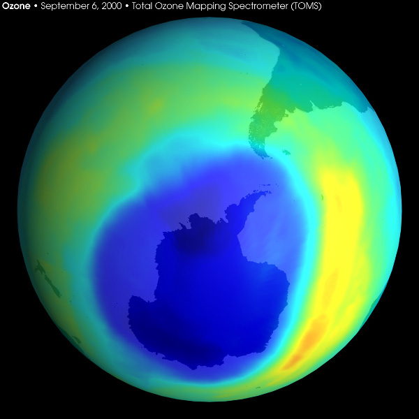

Research Methods
The practice in science: In introduction to research methods
Did you know?
Did you know that even though people talk about "the scientific method," there is more than one way to do research? Examples throughout history, even as early as 5000 BCE, reveal that the practice of science is not a simpple step-by-step path that leads to certain answers. Rather, the real scientific method is much less predictable and much more interesting.
When some people think of science, they think of formulas and facts to memorize. Many of us probably studied for a test in a science class by memorizing the names of the four nucleotides in DNA (adenine, cytosine, guanine, and thymine) or by practicing with one of Newton's laws of motion, like f = ma (force equals mass times acceleration). While this knowledge is an important part of science, it is not all of science. In addition to a body of knowledge that includes formulas and facts, science is a practice by which we pursue answers to questions that can be approached scientifically. This practice is referred to collectively as scientific research, and while the techniques that scientists use to conduct research may differ between disciplines, the underlying principles and objectives are similar. Whether you are talking about biology, chemistry, geology, physics, or any other scientific field, the body of knowledge that is built through these disciplines is based on the collection of data that are then analyzed and interpreted in light of other research findings. How do we know about adenine, cytosine, guanine, and thymine? These were not revealed by chance, but through the work of many scientists collecting data, evaluating the results, and putting together a comprehensive theory that explained their observations.
A brief history of scientific practice
The recorded roots of formal scientific research lie in the collective work of a number of individuals in ancient Greek, Persian, Arab, Indian, Chinese, and European cultures, rather than from a single person or event. The Greek mathematician Pythagoras is regarded as the first person to promote a scientific hypothesis when, based on his descriptive study of the movement of stars in the sky in the 5th century BCE, he proposed that the Earth was round. The Indian mathematician and astronomer Aryabhata used descriptive records regarding the movement of objects in the night sky to propose in the 6th century CE that the sun was the center of the solar system. In the 9th century, Chinese alchemists invented gunpowder while performing experiments attempting to make gold from other substances. And the Middle Eastern scientist Alhazen is credited with devising the concept of the scientific experiment while researching properties related to vision and light around 1000 CE.
The Scientific Revolution was subsequently fueled by the work of Galileo Galilei, Johannes Kepler, Isaac Newton (Figure 2), and others, who not only challenged the traditional geocentric view of the universe, but explicitly rejected the older philosophical approaches to natural science popularized by Aristotle. A key event marking the rejection of the philosophical method was the publication of Novum Organum: New Directions Concerning the Interpretation of Nature by Francis Bacon in 1620. Bacon was not a scientist, but rather an English philosopher and essayist, and Novum is a work on logic. In it, Bacon presented an inductive method of reasoning that he argued was superior to the philosophical approach of Aristotle. The Baconian method involved a repeating cycle of observation, hypothesis, experimentation, and the need for independent verification. Bacon's work championed a method that was objective, logical, and empirical and provided a basis for the development of scientific research methodology.
Bacon's method of scientific reasoning was further refined by the publication of Philosophiæ Naturalis Principia Mathematica (Mathematical Principles of Natural Philosophy) by the English physicist and mathematician Isaac Newton in 1686. Principia established four rules (described in more detail here) that have become the basis of modern approaches to science. In brief, Newton's rules proposed that the simplest explanation of natural phenomena is often the best, countering the practice that was common in his day of assigning complicated explanations derived from belief systems, the occult, and observations of natural events. And Principia maintained that special explanations of new data should not be used when a reasonable explanation already exists, specifically criticizing the tendency of many of Newton's contemporaries to embellish the significance of their findings with exotic new explanations.
Bacon and Newton laid the foundation that has been built upon by modern scientists and researchers in developing a rigorous methodology for investigating natural phenomena. In particular, the English statisticians Karl Pearson and Ronald Fisher significantly refined scientific research in the 20th century by developing statistical techniques for data analysis and research design (see our Statistics in Science module). And the practice of science continues to evolve today, as new tools and technologies become available and our knowledge about the natural world grows. The practice of science is commonly misrepresented as a simple, four- or five-step path to answering a scientific question, called "The Scientific Method." In reality, scientists rarely follow such a straightforward path through their research. Instead, scientific research includes many possible paths, not all of which lead to unequivocal answers. The real scientific method, or practice of science, is much more dynamic and interesting.
Comprehension Checkpoint
Scientific research, if done correctly, follows a straightforward five-step path and leads to definite answers.
More than one scientific method
The typical presentation of the Scientific Method (Figure 3) suggests that scientific research follows a linear path, proceeding from a question through observation, hypothesis formation, experimentation, and finally producing results and a conclusion. However, scientific research does not always proceed linearly. For example, prior to the mid 1800s, a popular scientific hypothesis held that maggots and microorganisms could be spontaneously generated from the inherent life-force that existed in some foods. Louis Pasteur doubted this hypothesis, and this led him to conduct a series of experiments that would eventually disprove the theory of spontaneous generation (see our Experimentation in Scientific Research module). Pasteur's work would be difficult to characterize using Figure 3 – while it did involve experimentation, he did not develop a hypothesis prior to his experiments. Instead he was motivated to disprove an existing hypothesis. Or consider the work of Grove Karl Gilbert, who conducted research on the Henry Mountains in Utah in the late 1800s (see our Description in Scientific Research module). Gilbert was not drawn to the area by a pressing scientific question, but rather he was sent there by the US government to explore the region. Further, Gilbert did not perform a single experiment in the Henry Mountains; his work was based solely on observation and description, yet no one would dispute that Gilbert was practicing science. The traditional and simplistic Scientific Method presented in Figure 3 does not begin to reflect the richness or diversity of scientific research, let alone the diversity of scientists themselves.
Scientific research methods
Scientific research is a robust and dynamic practice that employs multiple methods toward investigating phenomena, including experimentation, description, comparison, and modeling. Though these methods are described separately both here and in more detail in subsequent modules, many of these methods overlap or are used in combination. For example, when NASA scientists purposefully slammed a 370 kg spacecraft named Deep Impact into a passing comet in 2005, the study had some aspects of descriptive research and some aspects of experimental research (see our Experimentation in Scientific Research module). Many scientific investigations largely employ one method, but different methods may be combined in a single study, or a single study may have characteristics of more than one method. The choice of which research method to use is personal and depends on the experiences of the scientists conducting the research and the nature of the question they are seeking to address. Despite the overlap and interconnectedness of these research methods, it is useful to discuss them separately to understand the principal characteristics of each and the ways they can be used to investigate a question.
Experimentation: Experimental methods are used to investigate the relationship(s) between two or more variables when at least one of those variables can be intentionally controlled or manipulated. The resulting effect of that manipulation (often called a treatment) can then be measured on another variable or variables. The work of the French scientist Louis Pasteur is a classic example. Pasteur put soup broth in a series of flasks, some open to the atmosphere and others sealed. He then measured the effect that the flask type had on the appearance of microorganisms in the soup broth in an effort to study the source of those microorganisms (see our Experimentation in Science module).
Description: Description is used to gather data regarding natural phenomena and natural relationships and includes observations and measurements of behaviors. A classic example of a descriptive study is Copernicus's observations and sketches of the movement of planets in the sky in an effort to determine if Earth or the sun is the orbital center of those objects (see our Description in Scientific Research module).
Comparison: Comparison is used to determine and quantify relationships between two or more variables by observing different groups that either by choice or circumstance are exposed to different treatments. Examples of comparative research are the studies that were initiated in the 1950s to investigate the relationship between cigarette smoking and lung cancer in which scientists compared individuals who had chosen to smoke of their own accord with nonsmokers and correlated the decision to smoke (the treatment) with various health problems including lung cancer (see our Comparison in Scientific Research module).
Modeling: Both physical and computer-based models are built to mimic natural systems and then used to conduct experiments or make observations. Weather forecasts are an example of scientific modeling that we see every day, where data collected on temperature, wind speed, and direction are used in combination with known physics of atmospheric circulation to predict the path of storms and other weather patterns (see our Modeling in Scientific Research module).
These methods are interconnected and are often used in combination to fully understand complex phenomenon. Modeling and experimentation are ways of simplifying systems toward understanding causality and future events. However, both rely on assumptions and knowledge of existing systems that can be provided by descriptive studies or other experiments. Description and comparison are used to understand existing systems and are used to examine the application of experimental and modeling results in real-world systems. Results from descriptive and comparative studies are often used to confirm causal relationships identified by models and experiments. While some questions lend themselves to one or another strategy due to the scope or nature of the problem under investigation, most areas of scientific research employ all of these methods as a means of complementing one another toward clarifying a specific hypothesis, theory, or idea in science.
Comprehension Checkpoint
Scientific research methods, such as experimentation, description, comparison, and modeling,
Research methods in practice: The investigation of stratospheric ozone depletion
Scientific theories are clarified and strengthened through the collection of data from more than one method that generate multiple lines of evidence. Take, for example, the various research methods used to investigate what came to be known as the "ozone hole."
Early descriptive and comparative studies point to problem: In 1957, the British Antarctic Survey (BAS) began a descriptive study of stratospheric ozone levels in an effort to better understand the role that ozone plays in absorbing solar energy (MacDowall & Sutcliffe, 1960). For the next 20 years, the BAS recorded ozone levels and observed seasonal shifts in ozone levels, which they attributed to natural fluctuations. In the mid-1970s, however, the BAS began to note a dramatic drop in ozone levels that they correlated with the change of seasons in the Antarctic. Within a decade, they noted that a seasonal "ozone hole" (Figure 4) had begun to appear over the South Pole (Farman et al., 1985).
Figure 4: A picture of the Antarctic Ozone Hole in 2000, one of the largest holes on record. Ozone levels are given in Dobson Units, a measurement specific to stratospheric ozone research and named in honor of G.M.B. Dobson, one of the first scientists to investigate atmospheric ozone.The development of new technology opens novel research paths: Concurrent with the early BAS studies, the British scientist James Lovelock was working on developing new technology for the detection of trace concentrations of gases and vapors in the atmosphere (Lovelock, 1960). One instrument that Lovelock invented was a sensitive electron capture detector that could quantify atmospheric levels of chlorofluorocarbons (CFCs). At the time, CFCs were widely used as refrigerants and as propellants in aerosol cans and they were thought to be stable in the atmosphere and thus harmless chemicals. In 1970, Lovelock began an observational study of atmospheric CFCs and found that the chemicals were indeed very stable and could be carried long distances from major urban air pollution sources by prevailing winds. Under the impression that CFCs were chemically inert, Lovelock proposed that the chemicals could be used as benign atmospheric tracers of large air mass movements (Lovelock, 1971).
Modeling and experimental research are used to draw causal connections: In 1972, F. Sherwood Rowland, a chemist at the University of California at Irvine, attended a lecture on Lovelock's work. Rowland became interested in CFCs and began studying the subject with a colleague at Irvine, Mario Molina. Molina and Rowland were familiar with modeling research by Paul Crutzen, a researcher at the National Center for Atmospheric Research in Colorado, that had previously shown that nitrogen oxides are involved in chemical reactions in the stratosphere and can influence upper atmosphere ozone levels (Crutzen, 1970). They were also familiar with modeling research by Harold Johnston, an atmospheric chemist at the University of California at Berkeley, which suggested that nitrogen oxide emissions from supersonic jets could reduce stratospheric ozone levels (Johnston, 1971). With these studies in mind, they consulted experimental research published by Michael Clyne and Ronald Walker, two British chemists, regarding the reaction rates of several chlorine-containing compounds (Clyne & Walker, 1973). In 1974, Molina and Rowland published a landmark study in the journal Nature in which they modeled chemical kinetics to show that CFCs were not completely inert, and that they could be transported to high altitudes where they would break apart in strong sunlight and release chlorine radicals (Molina & Rowland, 1974). Molina and Rowland's model predicted that the chlorine radicals, which are reactive, would cause the destruction of significant amounts of ozone in the stratosphere.
Descriptive and comparative research provide real-world confirmation:In 1976, a group of scientists led by Allan Lazrus at the National Center for Atmospheric Research in Boulder, Colorado, used balloons to carry instruments aloft that could sample air at high altitudes. In these samples, they were able to detect the presence of CFCs above the troposphere – confirming that CFCs did indeed reach the stratosphere and that once there, they could decompose in light (Lazrus et al., 1976). Further research conducted using balloons and high-atmosphere aircraft in the 1980s confirmed that chlorine and chlorine oxide radicals contribute to the loss of ozone over the Antarctic (McElroy et al., 1986). By the late 1980s, scientists began to examine the possible link between ozone loss and skin cancer because high levels of ultraviolet light, as would exist under an ozone hole, can cause skin cancer. In areas such as Southern Chile, where the Antarctic ozone hole overlaps with a populated land mass, a significant correlation was indeed found between the growing ozone hole and increasing rates of skin cancer (Abarca & Casiccia, 2002).
As a result of this collection of diverse yet complementary scientific evidence, the world community began to limit the use of CFCs and ratified the Montreal Protocol in 1988, which imposed strict international limits on CFC use. In 1995, Molina, Rowland, and Crutzen shared the Nobel Prize in chemistry for their research that contributed to our understanding of ozone chemistry.
The ozone story (further detailed in our Resources for this module; see The Ozone Depletion Phenomenon under Research) highlights an important point: Scientific research is multi-dimensional, non-linear, and often leads down unexpected pathways. James Lovelock had no intention of contributing to the ozone depletion story; his work was directed at quantifying atmospheric CFC levels. Although gaining an understanding of the ozone hole may appear as a linear progression of events when viewed in hindsight, this was not the case at the time. While each researcher or research team built on previous work, it is more accurate to portray the relationships between their studies as a web of networked events, not as a linear series. Lovelock's work led Molina and Rowland to their ozone depletion models, but Lovelock's work is also widely cited by researchers developing improved electron capture detectors. Molina and Rowland not only used Lovelock's work, but they drew on the research of Crutzen, Johnston, Clyne, Walker, and many others. Any single research advance was subsequently pursued in a number of different directions that complemented and reinforced one another – a common phenomenon in science. The entire ozone story required modeling, experiments, comparative research, and descriptive studies to develop a coherent theory about the role of ozone in the atmosphere, how we as humans are affecting it, and how we are also affected by it.
Comprehension Checkpoint
The ozone research story shows that, in practice, scientific research is
The real practice of science
Scientific research methods are part of the practice through which questions can be addressed scientifically. These methods all produce data that are subject to analysis and interpretation and lead to ideas in science such as hypotheses, theories, and laws. Scientific ideas are developed and disseminated through the literature, where individuals and groups may debate the interpretations and significance of the results. Eventually, as multiple lines of evidence add weight to an idea, it becomes an integral part of the body of knowledge that exists in science and feeds back into the research process. Figure 5 provides a graphical overview of the materials we have developed to explain the real practice of science, and the key elements are described below.
The Scientific Community: Scientists (see our Scientists and the Scientific Community module) draw on their background, experiences, and even prejudices in deciding on the types of questions they pursue and the research methods that they employ, and they are supported in their efforts by the scientific institutions and the community in which they work (see our Scientific Institutions and Societies module). Human nature makes it impossible for any scientist to be completely objective, but an important aspect of scientific research is that scientists are open to any potential result. Science emphasizes the use of multiple lines of evidence as a check on the objectivity of both individual scientists and the community at large. Research is repeated, multiple methods are used to investigate the same phenomenon, and scientists report these methods and their interpretations when publishing their work. Assuring the objectivity of data and interpretation is built into the culture of science. These common practices unite a community of science made up of individuals and institutions that are dedicated to advancing science. Rowland, Molina, Lovelock, and Crutzen each were guided by their personal interests and supported by their respective institutions. For example, in addition to his work with CFCs, James Lovelock is credited with proposing the Gaia hypothesis that all living and non-living things on the planet interact with one another much like a large, single organism. This perspective influenced his interest in looking at the movement of large air masses across the globe, work that was supported by funding from the National Aeronautics and Space Administration (NASA).
Data: Science is a way of understanding the world around us that is founded on the principal of gathering and analyzing data (see our Data Analysis and Interpretation module). In contrast, before the popularization of science, philosophical explanations of natural phenomena based on reasoning rather than data were common, and these led to a host of unsupported ideas, many of which have proven incorrect. For example, in addition to his ideas on vision, the Greek philosopher Empedocles also reasoned that because most animals are warm to the touch, they must contain fire inside of them (see our States of Matter module). In contrast, the initial conclusion of the presence of a hole in the stratospheric ozone layer was based on years of data collected by scientists at the British Antarctic Survey. The amount of uncertainty and error (see our Uncertainty, Error, and Confidence module) associated with these data was critical to record as well – a small error in Dobson units would have made the hole seemingly disappear. Using statistical methods (see our Statistics in Science module) and data visualization techniques (see our Using Graphs and Visual Data in Science module) to analyze data, the scientists at the BAS drew on their own experience and knowledge to interpret those data, demonstrating that the "hole" was more than a seasonal, natural shift in ozone levels.
Ideas in science: Scientific research contributes to the body of scientific knowledge, held in record in the scientific literature (see our Utilizing the Scientific Literature module) so that future scientists can learn from past work. The literature does not simply hold a record of all of the data that scientists have collected: It also includes scientists' interpretations of those data. To express their ideas, scientists propose hypotheses to explain observations. For example, after observing, collecting, and interpreting data, Lovelock hypothesized that CFCs could be used by meteorologists as benign tracers of the movement of large air masses. While Lovelock was correct in his prediction that CFCs could be used to trace air movement, later research showed that they are not benign. This hypothesis was just one piece of evidence that Molina and Rowland used to form their theory of ozone depletion. Scientific theories (see our Theories, Hypotheses, and Laws module) are ideas that have held up under scrutiny and are supported by multiple lines of evidence. The ozone depletion theory is based on results from all of the studies described above, not just Lovelock's work. Unlike hypotheses, which can be tenuous in nature, theories rely on multiple lines of evidence and so are durable. Still, theories may change and be refined as new evidence and analyses come to light. For example, in 2007, a group of NASA scientists reported experimental results showing that chlorine peroxide, a compound formed when CFCs are transported to the stratosphere and which participates in the destruction of ozone, has a slower reaction rate in the presence of ultraviolet light than previously thought (Pope et al., 2007). The work by Pope and his colleagues does not dispute the theory of ozone destruction; rather, it does suggest that some modifications may be necessary in terms of the reaction rates used in atmospheric chemistry models.
Despite the fact that different scientists use different methods, they can easily share results and communicate with one another because of the common language that has developed to present and interpret data and construct ideas. These shared characteristics allow studies as disparate as atmospheric chemistry, plant biology, and paleontology to be grouped together under the heading of "science." Although a practicing scientist in any one of those disciplines will require very specialized factual knowledge to conduct their research, the broad similarities in methodology allow that knowledge to be shared across many disciplines.
Summary
Scientists use multiple methods to investigate the natural world and these interconnect and overlap, often with unexpected results. This module gives an overview of scientific research methods, data processing, and the practice of science. It discusses myths that many people believe about the scientific method and provides an introduction to our Research Methods series.
Key Concepts
- The practice of science involves many possible pathways. The classic description of the scientific method as a linear and circular process does not adequately capture the dynamic yet rigorous nature of the practice.
- Scientists use multiple research methods to gather data and develop hypertheses. These methods include experimentation, description, comparison, and modeling.
- Scientific research methods are complementary; when multiple lines of evidence independently support one another, hypotheses are strenthened and confidence in scientific conlusions improves.
QUIZ
- There are no examples of scientific research prior to the Scientific Revolution in Europe in the 16 century.
- Which of the following is NOT a component of all scientific research methods?
- In Novum Organum, Francis Bacon wrote about
- The problem with the traditional presentation of the scientific method as seen below is that
- The research that led to the adoption of the international agreement known as the Montreal Protocol, which limited the use of chlorofluorocarbons (CFCs),
(A)__being open to potential results
(C)__having other scientists review methods and findings
(B)__a method of reasoning that relies on philosophy instead of observation and study.
(C)__a challenge to the heliocentric view of the universe.
(D)__a methodology for analyzing data that involves statistical analysis.
(A)__scientific research rarely proceeds in a neat, linear fashion.
(B)__experimentation is not the only research method available to scientists.
(C)__not all research studies begin with a question.
(D)__All the other choices are correct.
(B)__involved only experimentation.
(C)__involved several different methods.
(D)__involved a type of method that cannot be easily classified.